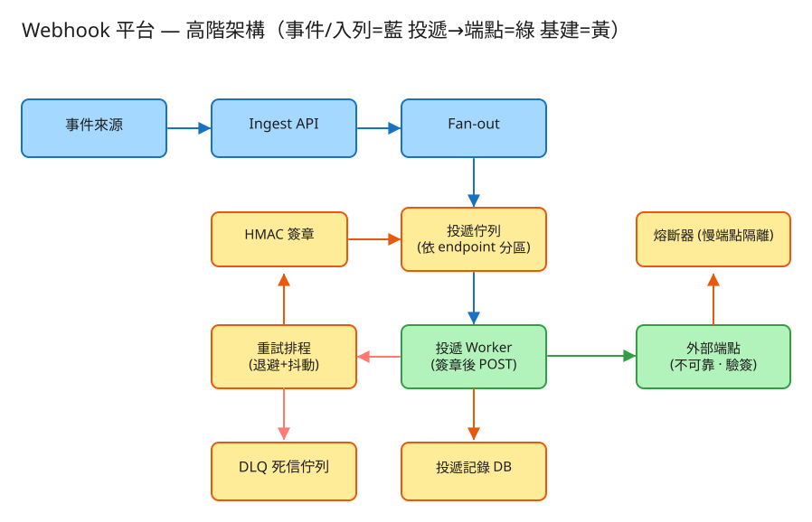

A 通知/Fan-out 建議 46 分鐘 Design a Webhook Delivery Platform
secret 用於簽章。payment.succeeded）後，平台把事件投遞到所有訂閱該事件的端點。X-Signature（HMAC）與 X-Timestamp，讓接收方驗證來源與防重放。| 指標 | 假設 | 推算 |
|---|---|---|
| 事件產生 | 1 億/日 | ~1150 事件 QPS（峰值 ×3 ≈ 3.5k） |
| Fan-out 放大 | 每事件平均 1.5 個訂閱端點 | ~1700 投遞 QPS（峰值 ≈ 5k） |
| 重試放大 | ~10% 投遞需重試，平均 2 次 | 投遞嘗試量再 ×1.2 ≈ 6k 嘗試 QPS |
| 投遞記錄 | 每筆嘗試 ~300 bytes，保留 30 天 | 6k×86400×30×300B ≈ 4.5 TB（時序/列式庫） |
| 慢端點佔比 | p99 對方回應 > 5s | worker 連線會被長時間佔住 → 必須隔離 |
# 註冊端點（客戶端，回傳 secret 只顯示一次）
POST /api/v1/endpoints
Body: { "url": "https://acme.com/hook", "events": ["payment.succeeded"] }
→ 201 { "endpoint_id": "ep_123", "secret": "whsec_abc..." }
# 內部發布事件（觸發 fan-out）
POST /api/v1/events
Body: { "type": "payment.succeeded", "data": {...}, "idempotency_key": "evt_9f2" }
→ 202 { "event_id": "evt_9f2", "queued_deliveries": 2 }
# 查詢某端點的投遞記錄（含每次嘗試）
GET /api/v1/endpoints/{id}/deliveries
→ { "deliveries": [ { "id":"dl_1", "status":"DEAD", "attempts":6,
"last_code":500, "next_retry_at":null } ] }
# 手動重送 DLQ 中的投遞
POST /api/v1/deliveries/{id}/redeliver → 202
# ===== 平台「送給對方」的請求長相（對方端點要驗這個）=====
POST https://acme.com/hook
Headers:
X-Webhook-Id: dl_1
X-Webhook-Timestamp: 1717113600
X-Webhook-Signature: sha256=HMAC(secret, "{timestamp}.{body}")
Idempotency-Key: evt_9f2 # 接收方據此去重
Body: { "type":"payment.succeeded", "data":{...} }
→ 對方驗簽 + 比對 timestamp 視窗 + 依 Idempotency-Key 去重 → 回 200endpoints
endpoint_id VARCHAR PRIMARY KEY
customer_id BIGINT
url TEXT
secret TEXT -- HMAC 共享密鑰（加密儲存）
events JSONB -- 訂閱的事件類型
state ENUM(ACTIVE,DISABLED)-- 連續失敗過多可自動停用
created_at TIMESTAMP
deliveries (投遞任務 = 一個狀態機，高頻寫 → 時序/列式庫)
delivery_id VARCHAR PRIMARY KEY
endpoint_id VARCHAR (FK, 也是分區鍵 → 每端點順序/隔離)
event_id VARCHAR -- = idempotency_key，貫穿全程
status ENUM(PENDING,DELIVERING,DELIVERED,RETRY,DEAD)
attempts INT
last_code INT -- 對方最後回應碼
next_retry_at TIMESTAMP -- 退避後的下次嘗試時間
created_at / updated_at
dead_letters (DLQ：超過重試上限的投遞，供人工/自動重送)
delivery_id, endpoint_id, event_id, payload, failed_at, reasonevent_id 全程不變，正是接收方做冪等去重的鍵。endpoint_id 同時是分區鍵 → 保證「同端點順序」並把慢端點隔離在自己的分區。
✏️ 用 Excalidraw 開啟編輯（diagram.excalidraw） 事件來源 ──▶ Ingest API ──▶ Fan-out ──▶ 投遞佇列（依 endpoint 分區）
│
▼
投遞 Worker（簽章 HMAC）── HTTP POST ──▶ 外部端點
│ │
2xx ◀───────┘ │ 非2xx/逾時
│ ▼
標記 DELIVERED 重試排程（指數退避+抖動）
│ 超過上限
▼
DLQ 死信佇列 ──▶ 人工/自動重送delivery 任務入列。secret。簽章 = HMAC-SHA256(secret, timestamp + "." + body)，放 X-Webhook-Signature。hash_equals）防時序攻擊。Idempotency-Key（= event_id）。接收方第一次處理後記下該鍵，重複收到直接回 200 不再處理。delay = base × 2^(attempt-1)（如 1s,2s,4s,8s…），避免對剛恢復的端點瞬間打爆。| 階段 | 瓶頸 | 對策 |
|---|---|---|
| 單一 worker 池 | 慢端點佔滿連線拖垮全體 | 依 endpoint/customer 分區 + per-endpoint 併發上限 + 熔斷 |
| 重試風暴 | 大量端點同時恢復 → 驚群 | 指數退避 + 抖動打散 |
| 順序 vs 吞吐 | 嚴格順序須序列化單分區 | 降級為「同端點盡量有序」或僅關鍵事件保序 |
| 投遞記錄寫爆 | 每次嘗試一筆，量大 | 時序/列式庫 + 批次寫 + TTL 過期 |
| 安全 | 客戶 URL 指向內網（SSRF） | 解析後封鎖私有 IP / metadata 端點，egress 代理 |
本題 demo 聚焦簽章 + 重試/退避 + DLQ（這題真正的考點），不是端點 CRUD，可實際用 PHP 內建伺服器跑：
src/EndpointStore.php 註冊端點（url + secret + 可設定的模擬投遞結果），JSON 檔模擬 DB。src/Signer.php HMAC-SHA256 對 timestamp + "." + payload 簽章，產生並驗證簽章標頭（hash_equals 常數時間比較 + timestamp 視窗防重放）。src/DeliveryQueue.php 投遞任務狀態機（PENDING→DELIVERING→DELIVERED/RETRY/DEAD）的儲存與排程，JSON 檔持久化。src/Dispatcher.php 投遞引擎：簽章 → 投遞 → 依結果指數退避 + 抖動重試，超過上限進 DLQ。public/index.php 路由：註冊端點 / 發布事件（fan-out 入列）/ 觸發投遞 / 查看投遞與 DLQ，附深色測試頁；另含 /receive 內建測試接收端（驗 HMAC 後回 200）。# 啟動
cd demo
php -S localhost:8008 -t public
# 瀏覽器開 http://localhost:8008
# 1) 註冊一個「會成功」端點、一個「會失敗」端點
# 2) 發布事件 → 自動 fan-out 入列
# 3) 反覆按「觸發投遞」→ 看失敗端點的退避重試與最終進 DLQ/receive 測試接收端示範完整驗簽流程。真實系統會用獨立的 worker 程序池並發、非阻塞地投遞，並以延遲佇列承載 next_retry_at。